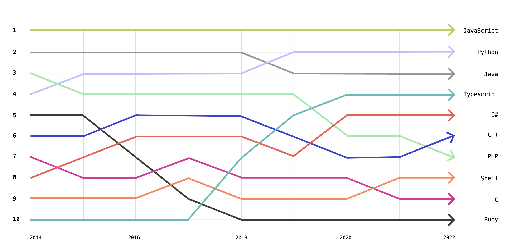

About languages
Pelo décimo segundo ano consecutivo, o JavaScript se destaca como a linguagem de programação mais utilizada, de acordo com uma pesquisa realizada em 2024 pela Stack Overflow. Este estudo englobou mais de 90 mil desenvolvedores de todo o mundo e abordou uma variedade de tópicos relacionados à tecnologia, comunidades, os frameworks mais populares e as linguagens de programação mais utilizadas.
|  |
|---|
| Popularidade de linguagens segundo github 2022 |
A verdade é que escolher uma linguagem para se trabalhar é algo estratégico! vou listar alguns critérios importantes para escolha de uma linguagem.
-
Ecosistema e comunidade: A linguagem de programação escolhida deve levar em consideração o tamanho da comunidade de usuários que utilizam e apoiam, prestam suporte para essa linguagem, para que exista conteúdos disponíveis para eventuais dúvidas e bugs. programar vai além das paredes de um quarto.
-
Tendencias do segmento: é importante observar as tendencias do segmento para não tomar decisões pouco maduras, é importante que a escolha por uma linguagem não seja apenas porque ela é popular, porque ela é mais moderna, a escolha deve estar alinhada ao objetivo do tomador de decisão.
-
Conexões com outras linguagens e outros ecosistemas: com a disponibilidade de diversas linguagens e tecnologias no mercado e diversos sistemas legados, há linguagens que podem aproveitar códigos pré-existentes de outras linguagens. Essa conexão entre linguagens pode acelerar o desenvolvimento e romper barreiras com sistemas legados.
-
Tipo de aplicação: Deve-se ter um objetivo claro de qual rumo o projeto vai tomar, é importante ter em mente do tipo de aplicação envolvida, a complexidade que o projeto irá tomar, o tamanho da aplicação
-
Facilidade de uso e aprendizagem:
-
Disponibilidade de bibliotecas e suporte de fornecedores:
-
Requisitos de engenharia:
exemplo:- performance: deve garantir que o tempo de consulta não seja maior que 5 segundos
- ser compatível com determinados browsers: ser compatível com Microsoft Edge versão 5 ou superior, ser compatível com firefox versão 1.0 ou superior
Python¶
Python é uma linguagem de programação de alto nível interpretada, com uma sintaxe simples, o que faz dela ser facilmente legível e user-friendly. Originalmente foi construido para satisfazer o desejo do seu criado Guido Van Rossum’s por uma linguagem que fosse simples de usar e bonito de se ver, Python theve sua primeira release publicada em 1991
Fun fact: O nome Python foi dado em homenagem ao programa de TV da BBC, “Monty Python's Flying Circus”.
Desde sua criação a linguagem cresceu e tornou-se amplamente aplicável a uma gama de profissionais, como desenvolvedores, cientistas de dados pesquisadores e outros.
Mas como, você pode se perguntar, uma linguagem de codificação pode ser simples e bonita de se ver? Aqui estão algumas provas, uma breve comparação com a linguagem Java:
Python¶
Java¶
public class HelloWorld {
public static void main (String[]args) {
System.out.println.("Hello world");
}
}
Note
Python é muito menos verboso quando comparado ao Java! 😯
Desde que Python é uma linguagem de propósito geral, isso pode ser usado em uma variedade de aplicações e sua natureza descomplicada faz dela uma exelente linguagem para automação de tarefas, construir websites ou softwares e analise dados.
Fun Fact: Essa página foi construida utilizando um framework de Python
Python tem uma série de outras caractristicas que tornaram ela popular entre profissionais de STEM (science, technology, engineering and mathematics).
Prós¶
-
Fácil para Ler e aprender: Além de sua relativa simplicidade de aprendizado ela é mais produtiva. Em comparação com outras linguagens de programação mais complexas, como C++, a sintaxe do Python permite que os usuários façam mais com menos e reduzam o tempo e o esforço para escrever as mesmas linhas de código.
-
Possui uma grande comunidade de usuários solidários: Até mesmo os melhores desenvolvedores enfrentam problemas, e é nesse ponto que as comunidades de usuários podem se tornar um recurso inestimável. O Python tem uma enorme comunidade com documentação, tutoriais, dicas e truques para dominar a linguagem. A comunidade Python no GitHub, por exemplo, oferece tudo, desde informações sobre a versão mais recente da linguagem até relatórios de bugs e notas de atualização.
-
É Academica: A linguagem Python se tornou a linguagem de referência no meio acadêmico, com alguns alunos tendo contato com ela desde o ensino fundamental. (Acredite ou não, há livros infantis ilustrados dedicados à linguagem Python.) Embora os alunos de ciência da computação aprendam Python com frequência, seu uso vai além dessa disciplina, abrangendo outras áreas de STEM e pesquisa acadêmica. Por exemplo, o Python pode ser usado para resolver equações diferenciais, realizar análises estatísticas, simular e rastrear a difusão de partículas e muito mais.
-
Tem alta demanda corporativa: Ela tem alta demanda corporativa. Devido à sua aplicabilidade em larga escala no trabalho de desenvolvimento e análise de dados, aprender e conhecer Python é frequentemente considerado uma das principais habilidades entre os candidatos a emprego. De acordo com o Statista, Python foi a terceira linguagem mais exigida em 2022 pelos recrutadores em todo o mundo. Ao analisar os visitantes por setor, o Stack Overflow observou que aqueles que visualizam perguntas relacionadas a Python estão mais comumente envolvidos no meio acadêmico, seguidos por eletrônicos, manufatura e setores de software.
-
É Open Source: Embora todos os direitos desse programa sejam reservados ao Instituto Python, ele é de código aberto e não há nenhuma limitação de uso, alteração e distribuição.Você pode usar e distribuir livremente o Python, mesmo para uso comercial. Não só você pode usar e distribuir softwares escritos nele, como também pode até mesmo fazer alterações no código-fonte do Python. O Python tem uma grande comunidade que o aprimora constantemente a cada iteração.
-
É Portátil: Os scripts Python podem ser usados em diferentes sistemas operacionais tais como: Windows, Linux, UNIX, Amigo, Mac OS, etc. Você pode mover programas Python de uma plataforma para outra e executá-los sem nenhuma alteração. Ele é executado sem problemas em quase todas as plataformas, incluindo Windows, Mac OS X e Linux. Python também suporta outras tecnologias como COM, .Net .
-
É Extensivel e Incorporável: Suponha que um aplicativo exija alto desempenho. Você pode combinar facilmente partes de C/C++ ou outras linguagens com código Python. Isso dará ao seu aplicativo alto desempenho, bem como recursos de script que outras linguagens podem não oferecer fora da caixa.
-
Possui uma biblioteca padrão ampla: Essa biblioteca está disponível para qualquer pessoa acessar e significa que os usuários não precisam escrever código para cada função - eles podem acessar módulos integrados que ajudam com problemas na programação diária e muito mais
Contras:¶
-
Não é fácil de manter: Como o Python é uma linguagem tipada dinamicamente, isso pode significar pode facilmente significar algo bom ou ruim a depender do contexto. À medida que uma aplicaão Python fica maior e mais complexa, isso pode se tornar difícil de manter, pois os erros se tornarão difíceis de rastrear e corrigir, portanto, será necessário ter experiência para projetar seu código e escrever bons testes unitários para facilitar a manutenção.
-
É lenta: Python é uma linguagem interpretada de alto nível, isso significa que ela abstrai muitos detalhes que o computador precisa entender, como por exemplo gerenciamento de memória, ponteiros etc. Apesar dela permitir você escrever código de uma forma mais próxima que os seres humanos pensam.
Referencias¶
Srinath, K. R. (2017). Python – The Fastest Growing Programming Language. International Research Journal of Engineering and Technology, 4(12), 354-357.
Rawat, A. (2020). A Review on Python Programming. International Journal of Research in Engineering, Science and Management, 3(12), 8-11.
GitHub. (2022). Top Programming Languages. Disponível em: Octoverse 2022
GitHub. (2024). Why Python Keeps Growing, Explained. Disponível em: GitHub Blog